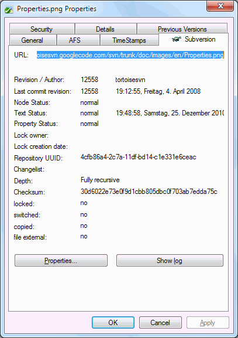
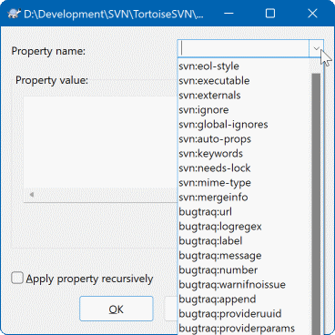
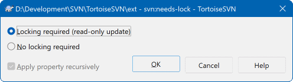
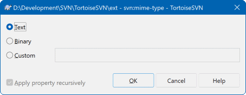
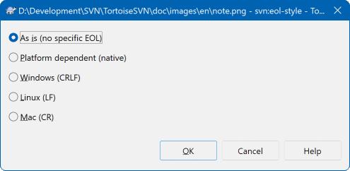
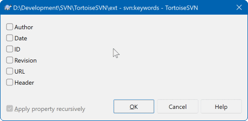

17属性对话框：设置文件行为
上一节的忽略规则，其实只是众多属性（property）里的一个。 属性就是附着在文件或目录上的一小段设置， 它的作用是告诉 SVN：这个文件你该用什么样的方式对待它。
理解属性最重要的一点：它不是文件里的一部分，而是「关于这个文件的一份附注」。
打个比方：你给一本书贴了一张便签，写着「这本书是易碎品，请轻拿轻放」。 便签上的字不会变成书里的内容，但别人拿起这本书时，会看到便签并按照它的指示行事。
属性就是这样。它带来的几个直接结论：
- 属性和文件内容分开存——改属性不会改文件的一个字符。
- 属性也有版本历史——可以提交、可以更新，还能查到是谁什么时候改的。
- 改属性同样算「改动」——所以属性改完之后文件会显示成已修改，必须提交才生效。
- 属性是可分享的——一次设置提交上去，团队所有人更新后都会遵守。
这就解释了上一节那个「忽略了规则一定要提交」的道理——规则本身就是属性。
打开属性标签页
这一节讲的忽略、换行符这类设置，通常都设在目录上。
有的版本里叫
Show properties，位置都在 TortoiseSVN 子菜单里，效果一样。
看不到属性时不要慌——说明还没设过，列表是空的，这很正常。
New... 按钮，会打开添加属性的对话框（见下一张图）。 在属性名下拉里选一个常用属性，然后在下方填它的值。
Edit... 改它的值， 或者点 Remove 把它整个删掉。取消某个设置，不是「关掉开关」，而是把这条属性删掉。
提交说明里写清改了什么属性、为什么改。
面对面看两张图

① 上方的属性列表——列出当前路径上已经存在的每一条属性， 通常左边是属性名（比如
svn:ignore、 svn:eol-style），右边是这个属性的值。点中一行，就能在别处看到它的详细内容。
这个列表就是「这个文件/目录被设了哪些特殊规则」的答案。搞不清某个文件行为为什么和别人不一样时，先来这儿看一眼。
②
New... 按钮——新增一条属性。 点开后可以选择一个常用的属性名（下拉列表里列好了），也可以自己手工敲一个名字。这是最常用的按钮——绝大多数时候你都是来加新属性的。
③
Edit... 按钮——修改选中属性的值。 比如忽略列表里要加一个名字、换行符的设置要从一种改成另一种，都用它。改值的时候会有专门的编辑窗口，不同属性弹出来的窗口长得不一样—— 见下面那张对照表里的几张图。
④
Remove 按钮——删掉选中的属性。 删掉之后，这个文件就恢复成「没有任何特殊规则」的默认状态。注意：删属性也是一次改动，一样要提交才生效。
⑤ 下方的内容显示区——选中某条属性后，这里显示它的完整取值。 属性值可能是很长的一串（比如忽略列表里几十个名字）， 所以需要一块专门的地方来看全。
查看长属性值时，别只看列表里被截断的那一小段。

New... 之后弹出的就是这个，它只有两部分要填：① Property name · 属性名——这是一个下拉框， 点开后会列出一批常用的属性名，直接选一个就行，不用自己记拼写。
强烈建议从下拉里选：属性名是区分大小写的固定写法， 手打很容易打错（比如少个冒号、大小写不对），也是最容易出现「设了但不生效」的原因。
下拉里一般会包含：忽略规则、换行符、二进制标记、关键字、加锁有关的、外部引用这几类常用项。 如果确实需要下拉里没有的属性，可以手工输入——但请务必确认拼写完全正确。
② Property value · 属性值——这条属性的内容。 不同的属性这里填的东西完全不一样：
• 忽略规则填的是一串名字（可以一行一个）；
• 换行符的类型填的是一个固定的词；
• 二进制标记填的是类型描述；
• 加锁相关的属性值往往是一个固定的词，代表「这个属性生效」。
拿不准填什么，就回到这张图下面的对照表，每种属性都写清楚了。
③ Apply property recursively · 递归应用——勾上它，这条属性会应用到当前目录下面的所有子目录和文件。
这是最容易被忽略、也最重要的一项：
• 不勾：属性只设在当前这一层，子目录不管。
• 勾上：整个目录树一起生效，省得一层层去设。
比如「整个项目的源码都要统一换行符」，那就得勾上递归——否则你只设了根目录， 深层子目录里的文件还是老样子。 但也要注意：递归设置会覆盖子目录上原有的同名属性，动手前想清楚。
④ 底部按钮——
OK 确认添加，Cancel 放弃。 点完 OK 回到属性标签页，你会看到新属性出现在列表里。别忘了最后提交。
常用属性对照表
属性有很多，但日常真正会用到的就下面这几条。每一条都配了它自己的编辑窗口截图。
| 属性名 | 它管什么 | 什么时候该设 |
|---|---|---|
svn:ignore |
忽略规则 | 让编译产物、日志、IDE 个人配置不再出现在待提交列表里。 上一节整节讲的就是它。设完之后记得提交，否则只在你本机生效。 |
svn:needs-lock |
默认只读，加锁才能改 | 给图片、模型、Office 文档这类没法合并的文件设上。 设了之后，这些文件检出时是只读的，必须先加锁才能编辑—— 等于强制大家「先锁再改」，从机制上避免两个人同时改坏文件。下一节讲加锁时会详细展开。 |
svn:mime-type |
标记这是什么类型的文件 | 告诉 SVN 这个文件是文本还是二进制。 用在那些「扩展名不太常见、SVN 认不出来」的文件上，避免它拿二进制文件当文本去比对（那样容易出乱子）。 图片、压缩包、可执行文件这一类最典型。 |
svn:eol-style |
统一换行符 | 解决「Windows 上打出的换行符和 Mac/Linux 不一样」带来的伪冲突。 设成固定的那种处理后，无论谁检出、在哪个系统上编辑，SVN 都会帮你转成那个平台合适的换行符，而存进版本库的是统一格式。版本库里就不会因为「换行符不一样」而报一堆无意义的冲突。 |
svn:keywords |
让文件里自动带上版本信息 | 设好之后，文件里写的那些特殊标记会在提交时被自动替换成真实的值—— 比如把标记替换成「最后一次改这个文件的版本号」「改它的人」「改动时间」。适合放在文件头部的注释里，一眼就知道这是哪一版。不设这个属性，那些标记就只是一串普通文字，永远不会变。 |
svn:externals |
引用别处的目录 | 让一个目录里「挂上」另一个仓库路径的内容—— 更新的时候，被引用的那份也会一起拉下来。适合多个项目共用一份公共代码的情况（比如好几个项目都要用的基础库）。用起来方便但要小心：公共代码一改，所有引用它的地方都会跟着变，改动的影响面会一下子放大。 |
每条属性长什么样：编辑窗口速览
下面四个窗口是选中属性后点 Edit... 时弹出的样子。 它们的共同点是：属性名已经固定好了，你只需要决定「值」怎么填—— 有的让你在下拉框里挑一项，有的让你勾选几个关键字。
svn:needs-lock · 默认只读

设置「文件默认只读」的窗口。值通常就是一个固定的词，代表这个属性生效—— 填上它，文件以后检出就是只读的，必须先加锁才能编辑。给图片、设计稿这类文件设，用来解决「总忘记加锁」的问题。
svn:mime-type · 标记文件类型

标记文件类型的窗口。填的内容是描述文件格式的固定写法， 用来告诉 SVN「这是二进制文件，别拿它当文本去对比」。用在那些扩展名不常见、SVN 认不出来的文件上。
svn:eol-style · 统一换行符

换行符设置的窗口。里面是一个选择项，在几种换行风格里挑一种。 选了之后团队内换行符就统一了，不会再出现「整个文件全是改动、其实一行代码都没改」的假冲突。团队里操作系统不一致时几乎必设。
svn:keywords · 自动带上版本信息

关键字替换的窗口。在这里勾选或填入要启用的关键字， 之后文件里对应的标记会在提交时被自动替换成真实的版本号、作者、修改时间。设了才有用，不设的话那些标记就只是普通文字，永远不变。
属性很多，但对大多数团队来说，先把这两条设好，收益最大：
-
svn:eol-style· 统一换行符—— 如果你的团队里有人用 Windows、有人用 Mac，这条几乎是必修项。 不设它的话，你会遇到那种「打开一看整个文件全是改动、其实一行代码都没变」的诡异冲突。 设一次，永久清净。 -
svn:needs-lock· 给二进制文件默认加锁—— 如果你做的是有美术资源、设计稿、Office 文档的项目，这条能从机制上防止两个人同时改同一个文件而互相覆盖。 人总会忘记手动加锁，把它变成文件本身的属性才靠得住。
这两条都建议设在目录上，并且勾上「递归应用」，一次把整棵树覆盖掉。
这一点值得再强调一遍，因为它是属性功能最容易被误解的地方。
你设完属性，只在你这台机器上立刻生效了。 服务器和同事那边还不知道。只有提交之后，其他人更新时才会把这条属性一起拿下来。
不提交会导致几种尴尬情况：
- 你这边已经把某个目录忽略掉了，同事那边还在一堆垃圾文件里挑拣。
- 你给文档设了「必须加锁才能改」，同事更新下来发现文件还是可写的，照样改，照样冲突。
- 排查问题时大家看到的文件行为不一致——因为每个人的属性设置不一样。
所以完整流程是四步：打开属性 → 设置 → 确认 → 提交。 少了最后一步，前面三步都只在你自己电脑上有效。
第一次遇到这个现象会有点慌：我明明一个字都没改，为什么文件变成红色叹号（已修改）了？
答案是：属性的变化本身也是一次改动。 SVN 不只是跟踪文件内容，也跟踪附着在上面的属性。 你改了属性，这个文件的「状态」就变了，所以角标显示成已修改——它没有出错，也没有把你的文件改坏。
遇到这种情况该怎么办：
- 别急着撤销。 如果你确实想保留这条属性设置，这个「已修改」正是你想要的——提交它就行。
- 想确认改的到底是内容还是属性，打开属性标签页看一眼，或者比对一下文件内容。 如果内容没变而状态是已修改，那十有八九就是属性变了。
- 确实不想要这个属性改动，就在属性标签页里把它改回去或删掉，状态自然会恢复正常。
同样地，别人改了某个文件的属性并提交，你更新之后也会看到那个文件变成「已修改」—— 这时候不用管它，正常往下干活即可，或者顺手提交一下让状态干净。
- 属性名手打拼错。自己敲的属性名拼错了，SVN 不会报错，只是这条属性和它不认识的名字一起被存下来，然后什么效果也没有。 一律从下拉列表里选，别手打。
- 该递归的没勾递归。在根目录设了换行符属性却没勾递归应用， 结果只有根目录那几个文件生效，深层子目录里几百个文件还是老样子。设完记得抽查一个子目录里的文件确认。
- 递归设置覆盖了子目录的旧设置。某个子目录上本来有特别配置， 你在上层勾了递归一设，它就被悄悄盖掉了。动手前先扫一眼子目录有没有已经存在的同名属性。
- 设完不提交。前面已经反复说了，但它依然是使用属性时最高频的问题。